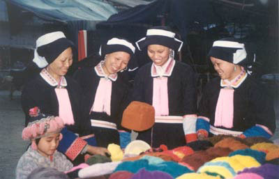

广西巴马瑶族
羊年春节期间，记者来到世界长寿之乡广西巴马瑶族自治县采访，所见所闻，令人耳目一新。走进巴马的地界，就觉得与众不同，那里的空气特别新鲜，山水特别秀丽，老人的精神特别饱满，就像步入一个神秘的世界。
县长寿研究所陈进超先生向我们具体地介绍巴马长寿的情况：巴马寿乡的长寿现象由来已久，源远流长。早在清朝嘉庆年间，嘉庆皇帝曾赋予当地一位 142岁的瑶族老寿星一首言绝句诗：“四朝雨露一身罩，烟霞养性同彭祖。道德传心向老聃，花甲再周衍无极。”1898年11月，光绪皇帝钦命广西提督学院为巴马县那桃乡平林村长寿村民邓诚才赠一块“唯仁者寿”的寿匾，至今仍完整地保存着。由此可见，巴马人长寿由古至今。
1964年，全国进行第二次人口普查，发现巴马的百岁老人有28人；1982年全国第三次人口普查，巴马的百岁老人增至50人；1990年全国第四次人口普查，巴马的百岁老人又增至66人；2000年全国第五次人口普查时，巴马的百岁老人多达74人，呈逐年上升趋势。现在，巴马的百岁老人已达 78人之多。
巴马的长寿老人不断增多，引起了世界各国的广泛关注，先后有三十多个国家的专家、学者、记者纷至沓来，到巴马进行长寿人瑞的考察、研究、探秘，揭开巴马人长寿的秘密。1991年9月，日本东京的国际自然医学学会会长森下敬一亲自率领国际长寿考察团三进巴马，进行详细考察探测，先后采访了29个百岁老人，还运用尖端的科学仪器和先进的测试手段，对巴马的自然环境、空气、食品、水体进行了大量的监测、分析、调查取证，得到了翔实的长寿因素资料，证实巴马的长寿现象实实在在，长寿比例高达30.8人/万人，大大超过国际上规定的25人/万人指标，因此被认定为世界级的长寿之乡。1991年11月，在日本东京召开的第十三届国际自然医学会大会上，正式宣布巴马瑶族自治县为世界第五长寿之乡。
耳听为虚，眼见为实，采访中，我们就近在巴马镇范围走访了几位百岁老寿星，目睹了寿星们的风采。
坡腾村良定屯壮族老寿星黄公教，今年已112岁高龄，脸膛还很红润，精神包满，虽然头发全白，眼睛还可以看物，说话清楚，还能独自行走，他的儿子黄大胜告诉我们，老人有时还能帮做点劈柴之类的家务呢！问他老人长寿的经验是什么，他说一辈子生活清淡，长期劳作，四处奔波，都是靠双腿步行。另外，特别爱吃山羊肉，有人曾叫他为“羊寿星”呢！
介莫村弄怀屯的潘乜权，1902年5月出生，她身体还很强壮，又高又胖，眼力耳力都还很好，虽无牙了，但说话很清楚，她一生是个典型的贤妻良母，里外当家好手，从小就学会耙田犁地，靠一双巧手养活6个子女，并培养成人；她平生生活勤俭，最爱吃红薯、苦麻菜，很少吃肉类；她长寿的经验有三，一是居住的自然环境特好，她家就住在大石山中，房屋后面仍是一片绿色的大森林，房前屋后都种有各种竹木，空气新鲜；二是一生长期躬耕劳作，不断运动；三是为人乐观开朗，性情温和，很少生气，爱唱山歌，爱看电视。现在，她已有孙10人，曾孙4人，四代同堂。
在原老龄委主任黄焕高的带领下，我们一行来到龙洪村巴买屯，目的要采访108岁的瑶族老寿星罗美珍，但却无人在家，等了许久，才见到他的孙媳妇回来，她告诉我们，阿奶已上山要柴去了。啊，这么大年纪还能上山要柴？孙媳妇说，能啊，别看我们老奶奶百多岁了，她身体还很硬朗呢。每天都到后山上要柴要猪莱，不乱在家啊！这老人真利害啊，遗憾的是，我们等到了很久，仍不回来，我们只好打道回府。
走了一个多钟头的山道，我们来到巴廖村六兵屯，102岁的瑶古族寿星韦乜桂青正在睡午觉，现年62岁的儿子韦桂青热情地接待我们，不断地向我们讲述他母亲的情况：我妈是个苦命人，从小就没有了父母，前半生生活过得非常艰难，连饭都吃不饱，靠吃些杂粮、山薯、野菜度日，吃菜没有油盐，常以火麻仁、黄豆粉当油煮菜送粥吃，倒也还养人，身体很健康，我妈一生生育4男2女，已有2个曾孙，四代同堂。现在虽然眼睛朦胧，但耳朵听力尚好，面容很好，还经常帮忙做些手上活，如脱玉米、刮木薯等。她生活比较有规律性。一般晚睡早起，生活朴素，多素少荤，性情温和，爱说爱笑，乐观开朗，还很喜欢唱山歌呢！老人醒来后，确实很精神，跟我们说起过去，滔滔不绝，还唱了几首山歌给我们听，唱完又哈哈大笑，真够乐观的。
巴马为什么有这么多的长寿老人，秘密在哪里？经中外长寿专家的长期考察探索，一致认定，巴马人长寿的主要因素在四个方面：一是具有特殊的自然环境。境内山青水秀，环境优美，空气新鲜，空气中负氧离子含量特高，每立方厘米空气中含负氧离子达2万多个，是一般平原地区的三十多倍；同时无环境污染，气候呈冬暖夏凉，年平均气温21度左右，是天然的养生好地方；二是具有独特的长寿食物。据调查，巴马寿星们的食物主要有珍珠黄玉米、大米、小米、红薯、黄豆、饭豆、猫豆等，常吃的蔬菜主要是南瓜苗、红薯叶、青菜、苦麻菜、雷公根、野藤菜、野蘑菇、香菇、木耳、竹笋、龙骨花等；油类以茶籽油、火麻仁、黄豆粉为主，他们多吃素食，少食荤腥；肉类喜吃当地盛产的巴马香猪、甲篆油鱼、黑山羊及土鸡土鸭等；三是老人们坚持长期生产劳动。生命在于运动，巴马人非常勤劳，一生都在不停地劳作，不停地活动，因交通不便经常性地步行；常常“出门就爬坡，天天翻山坳”，培育了他们坚强的性格和健康的体质，因而特别长寿；四是生活起居有规律，性格乐观开朗。这是巴马人长寿的内在因素，他们长期早睡早起，日出而作，日落而息，循之规律；他们虽然居住在封闭的山弄之中，生活十分艰难困苦，但他们以苦为乐，性格豪爽，乐观大方，形成了其乐融融的意境，造就了长寿基因的氛围。此外，巴马的长寿还与饮矿泉水、食野菜、喝中草药酒及晚婚晚育之类的养身之道有一定关联。